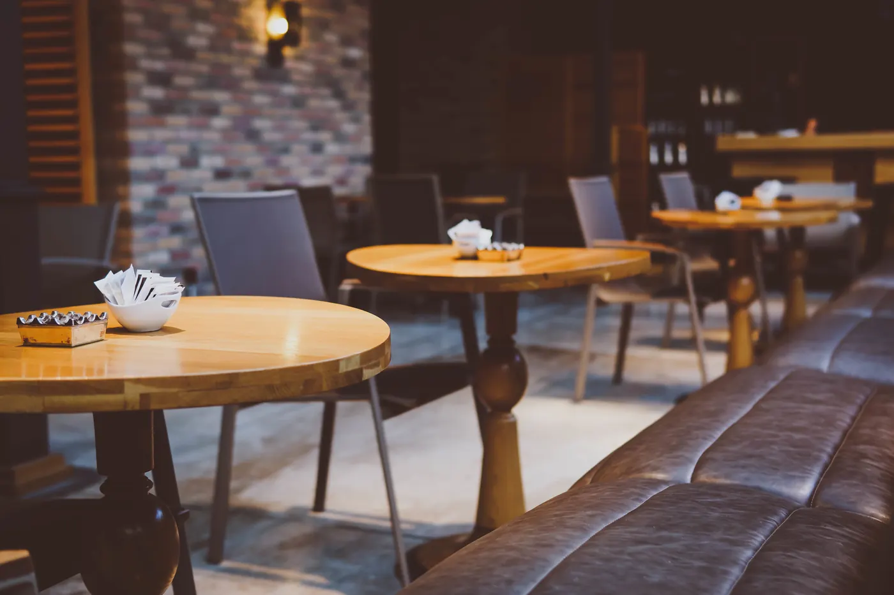
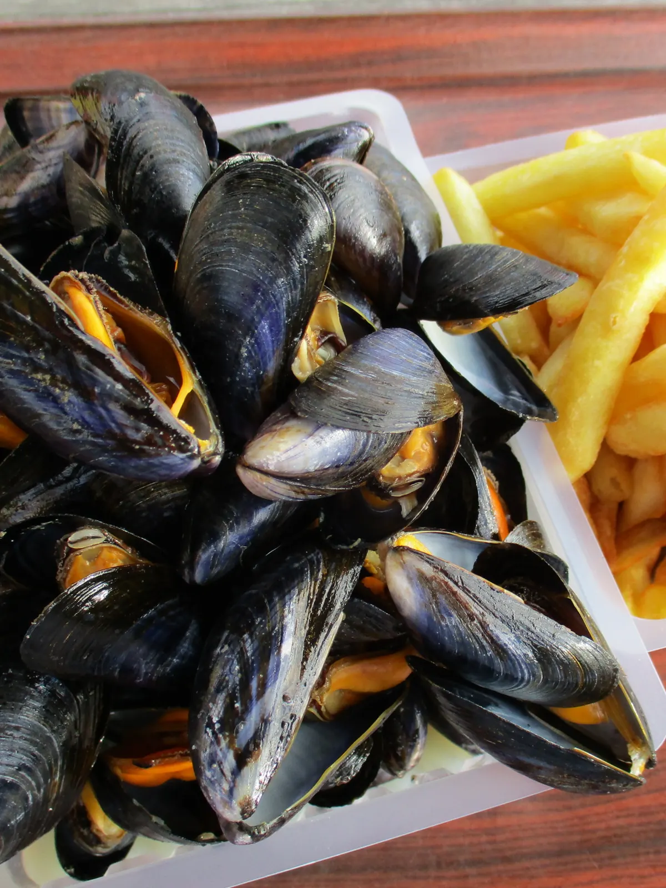
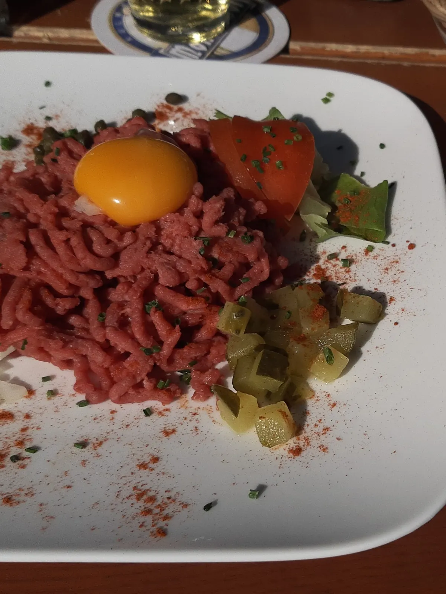
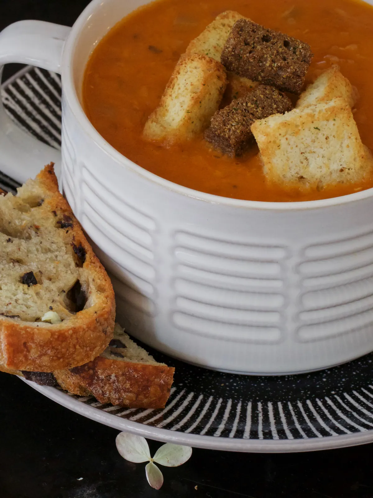
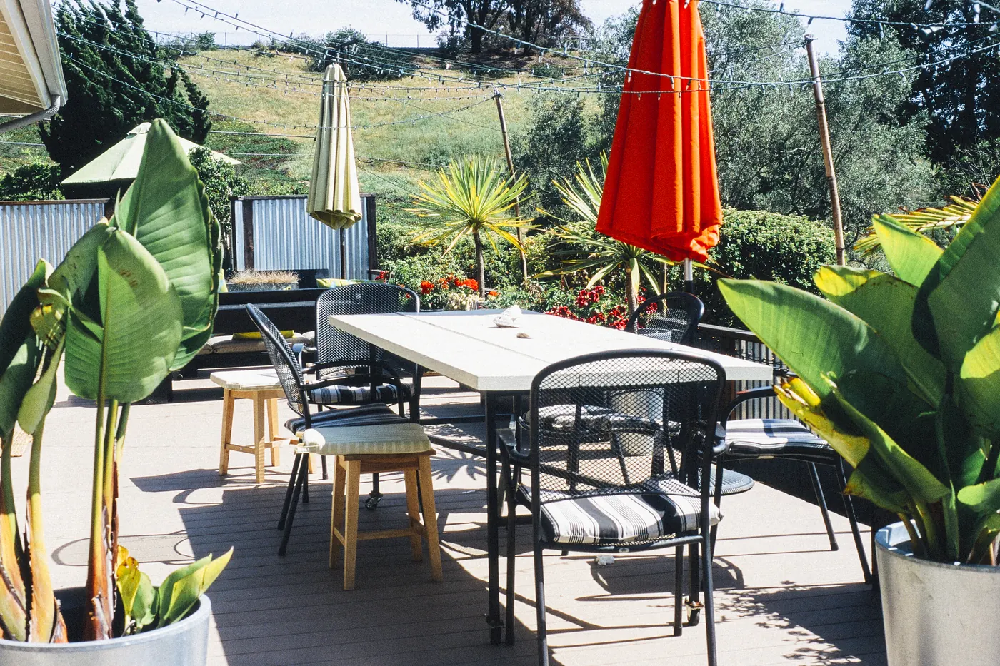
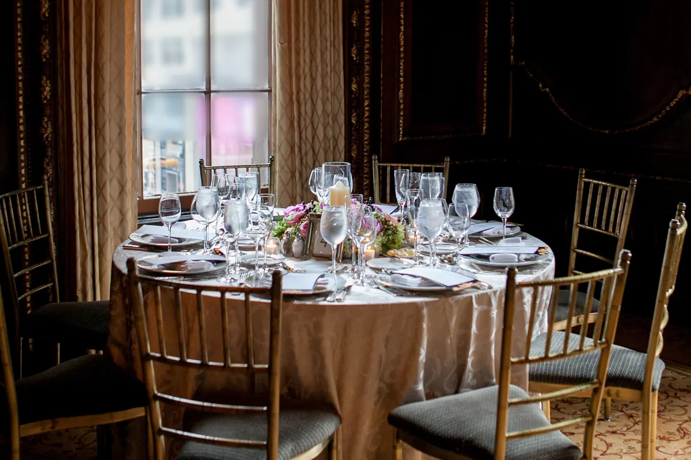
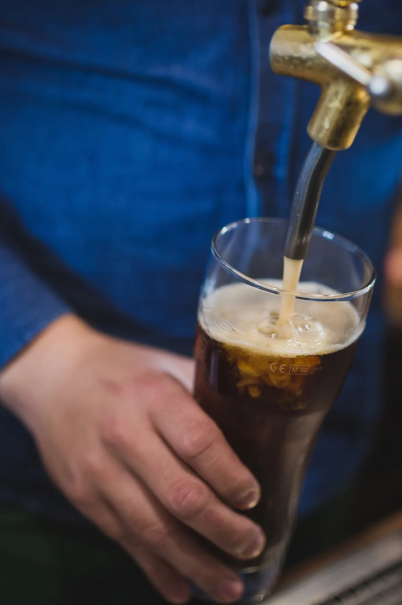
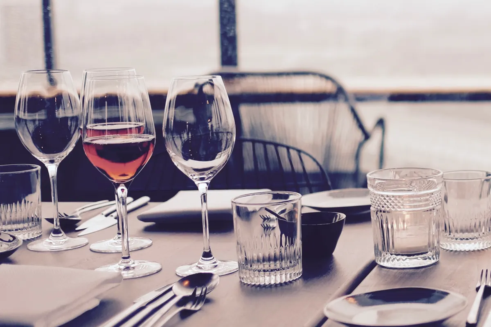

Eerlijke bistrokeuken, elke dag vers bereid.
Klassiekers uit de Belgische keuken en wat het seizoen brengt. Voor een lunch tussendoor, een avond met twee of een feest met de hele familie.
- UrenOpen van woensdag tot zondag.
- Terrasvan april tot september
- Groepentot 40 personen
De kaart
Een korte kaart, zodat alles vers kan zijn. In het seizoen staan er mosselen op, in de winter stoofvlees met donker bier.
Prijzen in euro, inclusief btw. Dit is een voorbeeldkaart.



Lunch op weekdagen
Van woensdag tot vrijdag serveren wij een lunch die op een uur klaar is. U kiest de soep van de dag, een dagschotel of beide.
- Soep van de dag€8
- Dagschotel€17
- Soep en dagschotel€22
De dagschotel staat elke ochtend op het bord aan de deur en hier op de website.

Het terras achter de bistro
Rustig, uit de wind en tussen het groen. Bij mooi weer eet u hier van april tot september, ook op zondagmiddag.
Reserveer op het terras
Groepen en feesten
Een verjaardag, een communie of een etentje met collega's. In de achterzaal zitten tot 40 personen samen, met een eigen menu dat wij vooraf met u afspreken.
- Vast menu vanaf 10 personen
- Kinderen eten mee van een eigen kaart
- U krijgt binnen twee werkdagen een voorstel

Bier en wijn
Aan de toog tappen wij twee bieren van het vat. Elke maand staat er een ander streekbier naast. De wijnkaart is kort en past bij de keuken, ook per glas.

Reserveer een tafel
Kies een dag, een uur en het aantal personen. U krijgt meteen een bevestiging.
Openingsuren
| Dag | Lunch | Diner |
|---|---|---|
| Woensdag | 12.00-14.00 | 18.00-21.30 |
| Donderdag | 12.00-14.00 | 18.00-21.30 |
| Vrijdag | 12.00-14.00 | 18.00-22.00 |
| Zaterdag | geen lunch | 18.00-22.00 |
| Zondag | 12.00-15.00 | 18.00-21.00 |
| Maandag | gesloten | |
| Dinsdag | gesloten | |
De keuken sluit een halfuur voor het einde van de dienst.
Ligging en contact
- Adreshier komt het adres van uw zaak, met een link naar de routebeschrijving
- Telefoonhier komt het nummer van uw zaak
- Parkerengratis parking op 100 meter
- Toegankelijkgelijkvloers, met aangepast toilet
Vragen
Kan ik met allergieën bij u eten?
Vraag gerust naar de allergenen per gerecht.
Hebt u vegetarische gerechten?
Ja, elke dag staat er minstens één vegetarisch hoofdgerecht op de kaart.
Mag mijn hond mee?
Op het terras is uw hond welkom. Binnen vragen wij om dat vooraf te melden.
Verkoopt u cadeaubonnen?
Ja, aan de toog of per mail. U kiest zelf het bedrag.
Fotoverantwoording
Alle foto's komen van StockSnap en Wikimedia Commons en zijn vrijgegeven onder CC0 (publiek domein).
- Openingsfoto: StockSnap, CC0 1.0
- Mosselen met frietjes: Wikimedia Commons, CC0 1.0
- Tartaar van het huis: Wikimedia Commons, CC0 1.0
- Lunch: StockSnap, CC0 1.0
- Terras: StockSnap, CC0 1.0
- Groepen en feesten: StockSnap, CC0 1.0
- Bier en wijn: StockSnap, CC0 1.0
- Reserveren: StockSnap, CC0 1.0